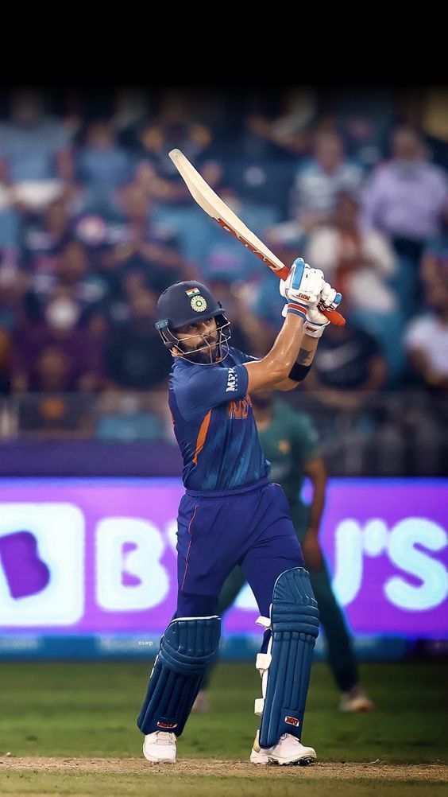
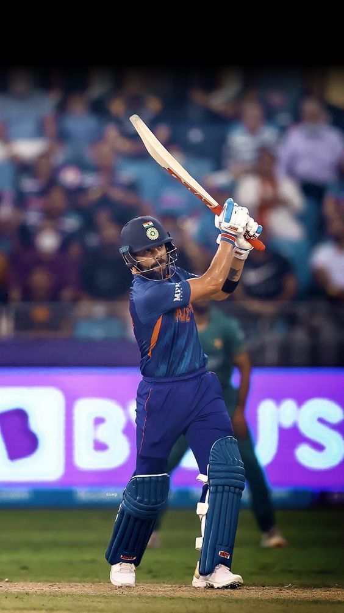
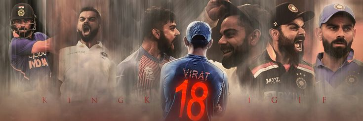
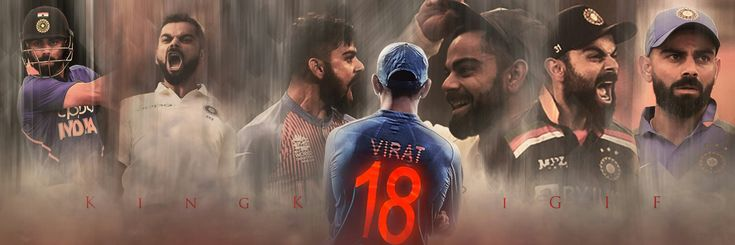

Virat Kohli’s professional cricket career began with a strong foundation in domestic cricket. He first made waves in the cricketing world as a member of the Delhi Under-15 team in 2002, where he quickly became the leading run-scorer in the 2002-03 Polly Umrigar Trophy. His stellar performances continued, and he progressed to the Under-17 level, playing in the Vijay Merchant Trophy during the 2004-05 season. His consistent performance earned him a spot in the India Under-19 team, and his leadership qualities soon became apparent
Kohli’s major breakthrough came in 2008 when he captained the Indian team to victory in the Under-19 Cricket World Cup held in Malaysia. His leadership and crucial knocks throughout the tournament caught the attention of the national selectors. Later that year, he was selected for the Indian ODI squad, making his debut against Sri Lanka in August 2008. Batting as an opener, Kohli scored a decent 12 runs, but it was clear that he had the potential to become a mainstay in the team. His first notable performance came in his fourth ODI, where he scored a vital 54 runs, helping India chase down a target against Sri Lanka. This marked the beginning of Kohli’s journey in international cricket, where he would soon evolve into one of the sport’s biggest icons.


 

.jpeg)


.jpeg)


 
